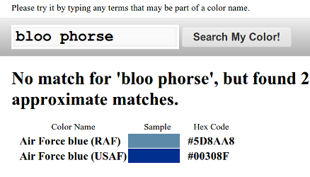
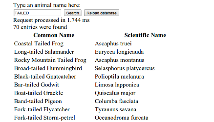
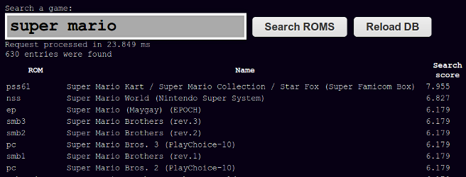

a javascript search engine library for the browser
Fullproof is a javascript library that provides high-quality full-text search in the browser.
This specially makes sense if your webapp is designed to work offline, using the HTML5 offline feature or because your application runs on a possibly disconnected mobile device.
Features
Boolean and Scoring search engines available, depending on the kind of search your application needs
Automatic HTML5 storage detection, and graceful degradation, with a configurable constraint-based capabilities system. Currently manages WebSQL, IndexedDB and Memory data storage.
Full unicode support and normalization, diacritical marks removal, stemming and phonetical algorithms (currently available for english and french)
Configurable and very easely extensible parsing and token normalization system
Easy to integrate, zero external dependency, ~100k minified
Note that fullproof is NOT a document management system, it does only one thing: provide fulltext search to your application, it does not aim at storing documents or data.
Some Screenshots
A few screenshots from the examples.
Color search using metaphone
Animals from the US
Searching in the pool of MAME Roms